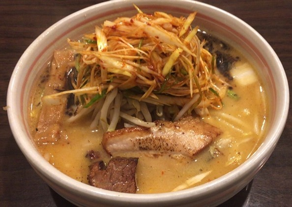
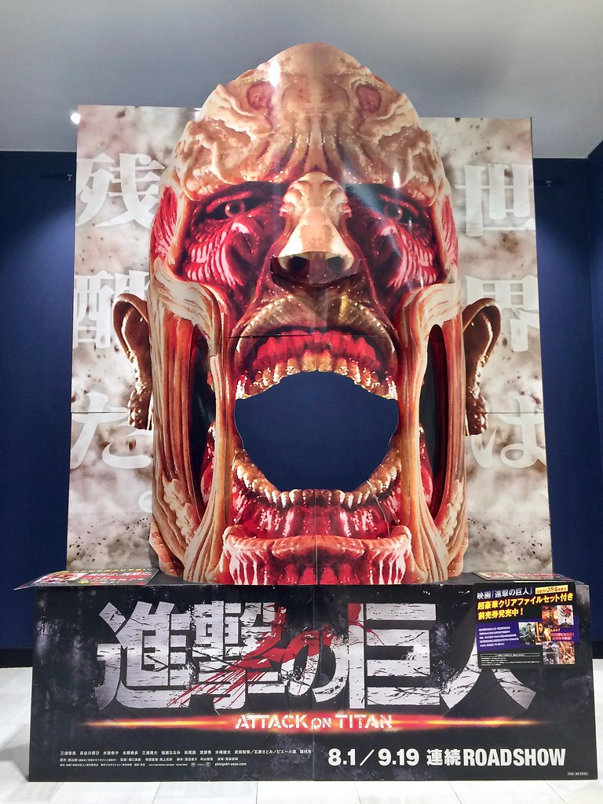
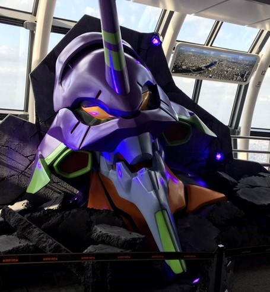

-
好きな食べ物
- ラーメン
-
好きな映画
- イエスマン
-
好きな漫画
- 進撃の巨人
- ダイヤのA
-
好きなアニメ
- エヴァンゲリオン

こってり系が一番好きです。札幌味噌ラーメンが大好物です。
元気がでるコメディ洋画。
頼み事や友人からの誘いなど全てを面倒くさいと断ってきた『ノーマン』な主人公が、
全ての頼み事や誘いを『YES』で応える『イエスマン』に…
すると人生がどんどん上手くいくようになるが…！？

つい先日完結したばかりの名作
最初から最後までずっと面白いのでまだ見てない方は是非！
王道野球漫画
強豪校の野球部に新入生として入部した主人公がエースナンバーを目指し奮闘する野球漫画
最初は頼りない主人公。物語が進むごとに成長していく様子を見ると心が熱くなります！

話題の超大作
1995年に始まった作品が2021年になりシリーズ最終作となる「シン・エヴァンゲリオン」が公開
熱い戦闘はもちろん、主人公シンジの感情をはじめとした、どこか儚い物語は最高です！